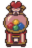
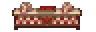
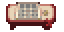
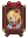

HOLOCRAWL · 고정지형 초안201
하쨔마 · 로터리 차마차맥스
빨강·크림 체크무늬 창구와 하트 장식 복권기를 놓은 작은 복권 가게입니다. 하쨔마의 금발 초상과 붉은 리본, 양옆의 스크래치 책상으로 시설의 개성을 더했습니다. 가운데 두 칸 통로를 따라 판매 창구와 책상에 접근할 수 있습니다.
도트 준비 중…
기존 벽에 붙인 배치독립 배치 · 사방 통로
13×11칸 · 복권기·판매 창구·스크래치 책상 · 입구2칸 양개문. 그림을 누르면2배로 확대됩니다.
새 도트 확대
하트 장식 복권기
체크무늬 판매 창구
스크래치 책상
하쨔마 초상
참고 자료와 재구성 범위
하쨔마 공식 캐릭터의 금발·하트·붉은 리본과 원작 복권 시설 화면의 체크무늬·색색의 공을 참고했습니다. 방과 입구는 잔향도시용으로 재구성했습니다.
시설 미술·배치 검토본입니다. 적·보상·복권 기능은 이후 단계입니다. 배치 검사 · 도트 목록